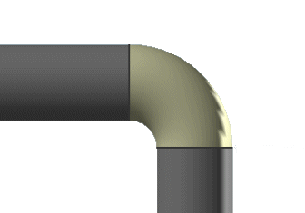

预计完成这堂课需要：8–12 分钟
与使用自动折弯段生成管线相同，您同样可以在创建管线时在其中包含标准弯头。

指派默认弯头将自动根据指派默认弯头的设置，来把标准弯头放置到路径段的顶点上。为了把默认弯头放置到路径中：
弯头的 ELBOW_ANG 值必须与当前创建的线段和上一条线段所成的角度相同。
弯头是部件族表中满足目标路径特性的唯一成员。
如果 NX 无法找到合适的弯头来放置到拐角中，则将不会放置弯头，如果这时候已启用指派默认转角，就会创建一个折弯段。
选中后，这个选项将会在拐角超过90°，并且无法放置默认弯头的顶点处放置切割弯头，允许切割弯头只在管道和布管应用模块中可用，并且需要选中指派默认弯头复选框。默认的弯头部件族模板将作为切割弯头的种子部件。
|
应用模块 |
机械管线布置 |
|
对话框 |
创建线性路径→设置组→指派默认弯头 |
|
首选项 |
首选项→管线布置→部件选项卡→指派默认弯头 |